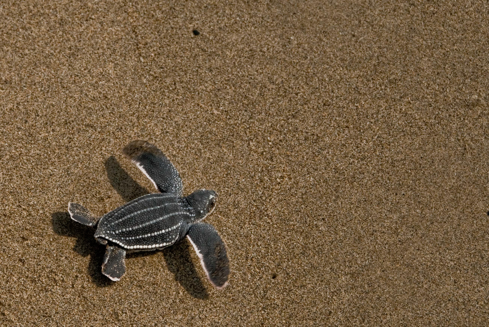
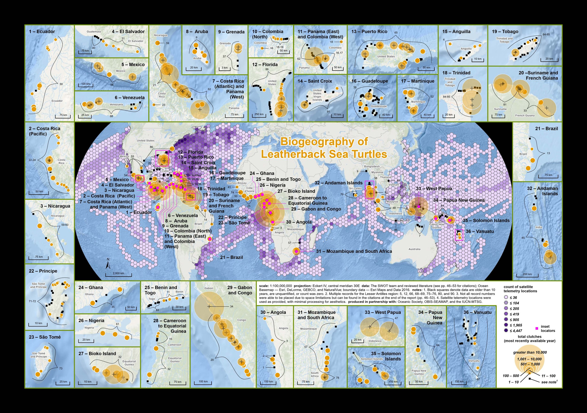

Learn About Sea Turtles
Leatherback Sea Turtle
Date: June 20, 2024
Leatherback turtles are the most unique sea turtle species!
As the only living member of the Dermochelyidae family, they
are quite different from the hard-shell sea turtle species,
like green sea turtles. They are also the largest sea
turtles. Leatherbacks reach more than 1.8 m (6 ft) in length
and more than 640 kg (1,410 lbs) in weight. During their
long migrations, leatherbacks regularly dive to depths
greater than 1,000 m (3,281 ft) in search of gelatinous
zooplankton, such as jellyfish, to eat. Leatherback turtles
are threatened and rapidly declining in many areas of the
world.
LEATHERBACK TURTLE SCIENTIFIC NAME
Dermochelys coriacea
HOW THREATENED ARE LEATHERBACK TURTLES?
Leatherbacks are listed as Vulnerable by the IUCN Red List of Threatened Species, a status designated in 2013. However, more recent data suggests that leatherbacks may be more threatened than this status suggests. Each of the subpopulations of leatherbacks has also been assessed by the IUCN and all are either endangered, critically endangered, or data deficient. THREATS TO LEATHERBACK TURTLES
Leatherback sea turtles face numerous threats, most of them related to human activities. These threats include:
- Fisheries Interactions - the greatest threat to leatherbacks is fishing practices. Fishing nets and lines can accidentally catch leatherbacks entangling and drowning them, an issue called bycatch. Discarded fishing gear, aka “ghost gear” also continues to entangle leatherbacks indefinitely as it floats in the ocean.
- Pollution and Pathogens (including plastic pollution) - plastic pollution affects leatherbacks by entangling turtles and impeding movement and swimming. Leatherbacks also eat plastic, mistaking it for jellyfish, their primary food source, which can cause choking, intestinal damage, and blockages.
- Coastal Development - developed beaches restrict the area that leatherbacks have to lay their nests and lights from buildings discourage nesting turtles and disorient hatchlings.
- Climate Change - changing climate impacts the leatherbacks' food sources, their migration routes, and the development of baby turtles. Hotter, dryer sand negatively impacts the incubation of leatherback nests and warmer nests produce more female hatchlings than males - an issue for population demographics.
- Direct Take - In some places, leatherback eggs are harvested for consumption, and even adults are occasionally hunted for their meat.
LEATHERBACK TURTLE DISTRIBUTION MAP
LEATHERBACK SEA TURTLE FACTS
- The leatherback is the only remaining member of its taxonomic family (Dermochelyidae).
- Leatherbacks rely on a unique suite of adaptations including large body size, changes in activity and metabolic rate, peripheral insulation (i.e. fat), and adjustments in blood flow to maintain stable core body temperatures in varying water temperatures from temperate to tropical latitudes.
- The largest sea turtle ever reported was an adult male leatherback found in Wales. It was greater than 2 meters (6.6 feet) long and 900 kg (1980 lbs) in mass.
- The longest recorded leatherback migration was 13,000 miles - one way!
- Leatherbacks dive much deeper than other turtles, regularly reaching depths beyond 1,000 m (3,281 ft). The leatherback's deepest recorded dives exceed 1,250 m (3,900 ft). The leatherback's flexible shell allows them to withstand the pressure of such deep dives.
HOW DO LEATHERBACKS REPRODUCE?
- Female leatherbacks nest every 2-4 years and lay 4-7 clutches of eggs per season. Each clutch contains 50 to 90 eggs, which means leatherbacks lay an average of 350 eggs in a nesting season!
- An average of 60% of eggs laid in a leatherback nest will hatch.
- Leatherback eggs are the size of billiard balls and weigh roughly 80 grams.
- A leatherback nest's incubation period is approximately 60 days long.